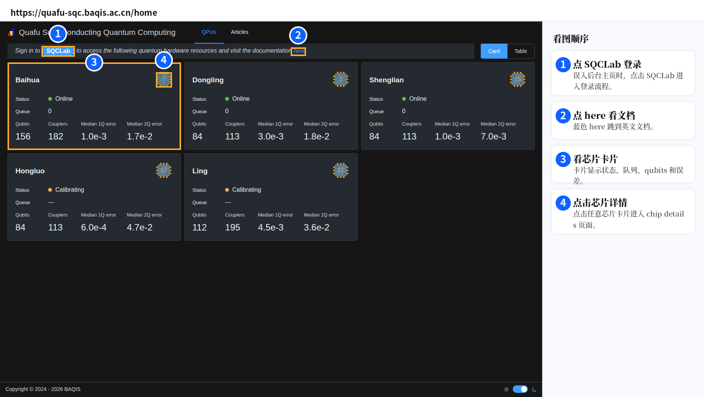
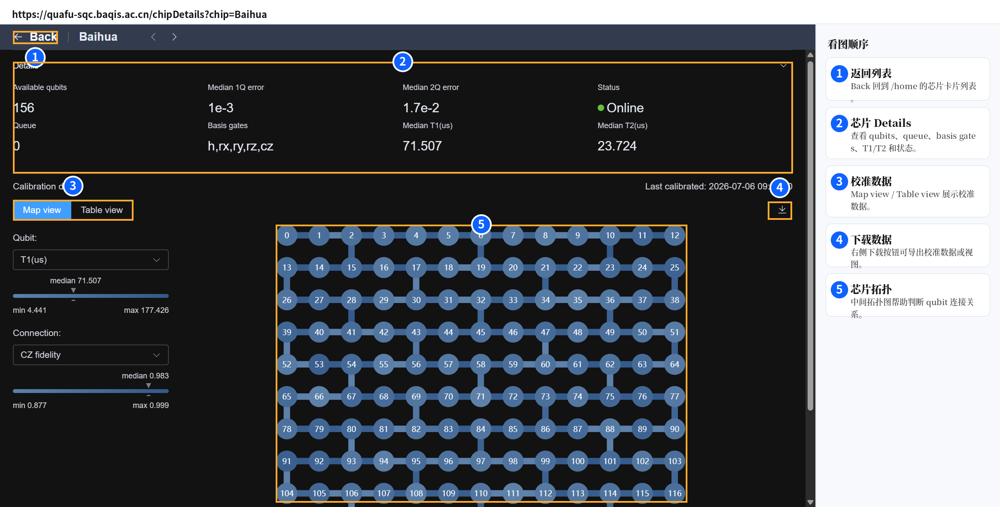
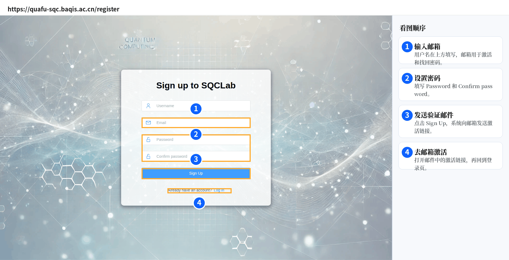
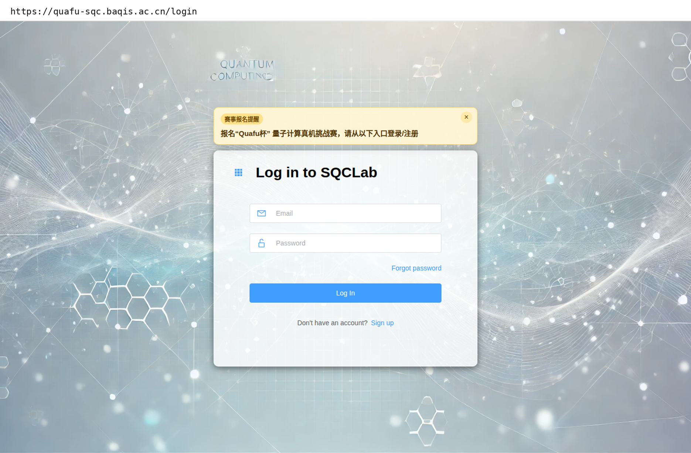
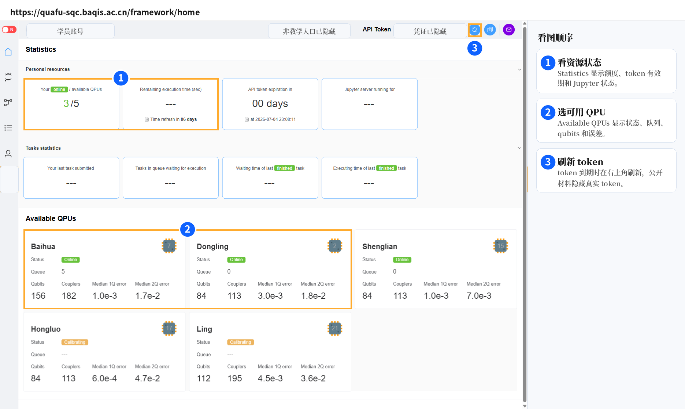
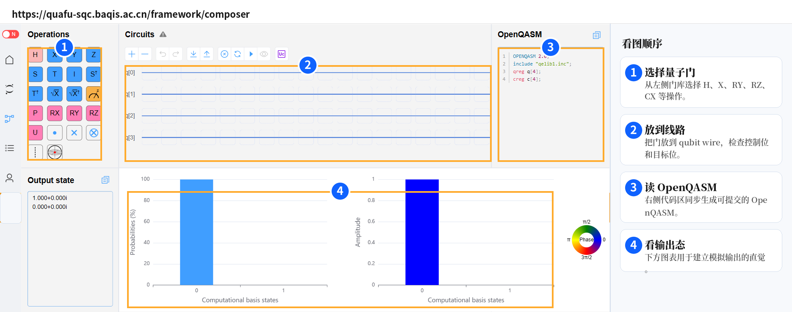
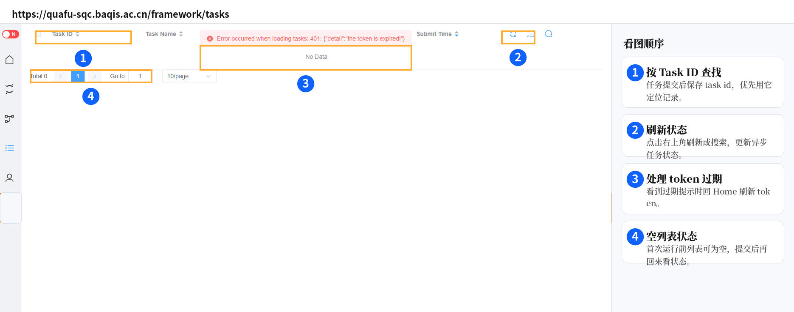
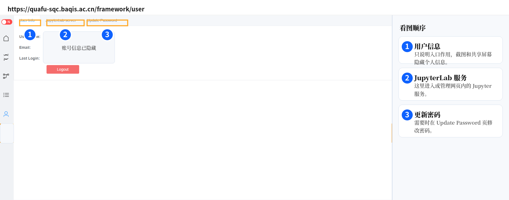
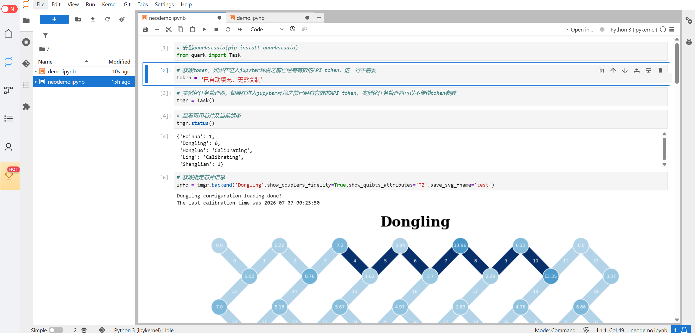
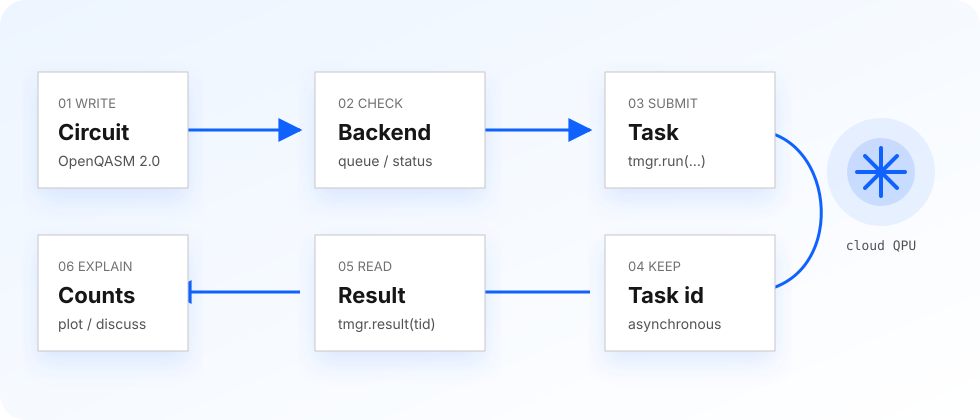

这份教程直接给第一次使用 Quafu 的同学阅读。你会先认清几个常用入口，再完成注册登录、查看控制台、打开 Jupyter demo，最后用 QuarkStudio 提交一个 Bell state 任务并读出 counts。
Quafu 课堂中最常用的是三个官网入口和两个文档入口。前三个官网入口都在 quafu-sqc.baqis.ac.cn 域名下。
来到 https://quafu-sqc.baqis.ac.cn/home 时，可以先看芯片卡片；如果需要登录，点击 SQCLab；如果需要查文档，点击蓝色的 here。
点击后进入登录流程，适合从后台主页切到个人控制台。
点击后打开官方英文文档，适合查 API、安装和结果字段。
卡片给出后端名称、状态和概况，点开后可以看更细的校准信息。
详情页会展示 qubits、queue、basis gates、T1/T2、校准数据和拓扑图。


第一次使用时，按页面顺序完成账号开通：输入邮箱，设置密码，发送验证邮件，去邮箱激活。激活完成后回到登录页，登录后会进入 /framework/home。

填写可收信邮箱，设置并确认密码，发送验证邮件，然后到邮箱中点击激活链接。

输入邮箱和密码后进入控制台；登录失败时先检查邮箱是否已经激活。
这四个页面覆盖第一次上手的主线：看资源，搭电路，查任务，管理个人入口。下面先用四张简图建立方向感，再逐页说明。




Home 页面显示 token 到期提示、任务统计和可用 QPU 卡片。提交任务前先看后端是否在线、队列是否合适，以及目标芯片的 qubits、couplers、1Q/2Q error。
Composer 左侧提供门操作，中间是 qubit wires，右侧会同步生成 OpenQASM。第一课用 H 和 CX 做 Bell state，就能把“图形电路”和“文本电路”对应起来。
云端任务是异步执行的。提交后保存 task id，在 Tasks 页面按 task id 查状态，完成后再读取结果；看到 token expired 提示时，回到 Home 刷新 token。
User 页面包含个人信息、JupyterLab server、密码更新和退出登录。公开展示时先隐藏个人字段，课堂中重点讲 Jupyter 入口和账号安全。
Quafu 的 JupyterLab 可以作为课堂备用环境。打开 demo.ipynb 后，token 已经默认准备好，直接运行即可；notebook 里还能看到更直观的芯片拓扑图。
本地 Python 环境没准备好的同学，可以先用 JupyterLab 跟上演示；课后再把同样的 QuarkStudio 代码搬到本地环境。

QuarkStudio 的第一课用 Task 管理提交。先看后端状态，再提交任务，最后用 task id 拉取结果。
from quark import Task
# 公开教程只写占位符；自己的 token 保存在本地私有位置。
tmgr = Task("YOUR_QUAFU_TOKEN")
# 1. 查看可用后端
print(tmgr.status())
circuit = """
OPENQASM 2.0;
include "qelib1.inc";
qreg q[2];
creg c[2];
h q[0];
cx q[0],q[1];
measure q[0] -> c[0];
measure q[1] -> c[1];
"""
task = {
"chip": "example_backend",
"name": "bell-state-demo",
"circuit": circuit,
"shots": 1000,
}
# 2. 提交任务；保存 task id
tid = tmgr.run(task)
print(tid)
# 3. 等待任务完成后读取结果
res = tmgr.result(tid)
print(res)OpenQASM 3 有官方 ANTLR 参考语法；本课代码使用 OpenQASM 2.0，可用 qiskit.qasm2.loads(circuit) 做语法解析检查。本页面会把含 OPENQASM 的字符串显示为 OpenQASM lint: syntax parse check。
from qiskit import qasm2
# 如果这一行能够执行，说明这段 OpenQASM 2.0 可以被解析。
qasm2.loads(circuit)不要把真实 token 发到群里、写进公开仓库或放进截图。公开代码统一使用 YOUR_QUAFU_TOKEN。
Bell state 的演示结果通常重点看 00 与 11 两个 bitstring。真实芯片会有噪声，所以 counts 关注主要分布和总体趋势。
| 字段 | 课堂读法 | 常见处理 |
|---|---|---|
status | 任务当前状态。 | 未完成时等待后再查，避免重复提交。 |
task id | 云端任务编号。 | 提交后立刻保存，后续查询都靠它。 |
count | 测量得到的 bitstring 次数。 | 先看总 shots，再看主要 bitstring 的分布。 |
error | 提交或执行问题。 | 按 token、后端状态、OpenQASM、shots 顺序排查。 |

quafu-skill 是配套的开源技能仓库，用来把 Quafu 的常用操作、凭证安全提醒、QuarkStudio 提交流程和课堂练习整理成可复用的 agent 工作流。
按本页顺序完成入口、注册登录、控制台和 Jupyter demo。
用 tmgr.status()、tmgr.run(task)、tmgr.result(tid) 跑通一次最小任务。
把容易忘的命令、排错顺序和练习模板交给 quafu-skill 维护。
读完本页后，你应该能够独立进入 Quafu，识别 Home、Composer、Tasks、User，打开 Jupyter demo，并用 QuarkStudio 提交和查询一个 Bell state 任务。